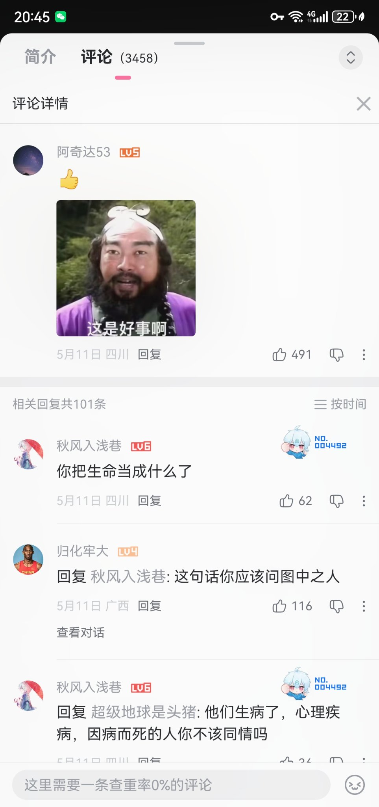

@Strf_9040C 呃啊怎么还在传这个…那我就再贴一遍调查结果咯🥹
已找到的48人中有2人也就是4%的朋友永远离开🕯️虽然不容乐观，但绝非大部分喵
再看到这个一拍脑袋的谣言继续传好力竭呢…


已找到的48人中有2人也就是4%的朋友永远离开🕯️虽然不容乐观，但绝非大部分喵
再看到这个一拍脑袋的谣言继续传好力竭呢…

喵呜～找到了75%去年同框的朋友～这样就作为阶段性成果叭
可视化了大家的现状…图中是已找到账号的48位…有2位已逝世🕯️（黑白），6位账号今年没有活跃（半透明）
“我们跨性别是温暖的团体哦！”～是哦，我们的颜色都还鲜艳，都在感受着彼此的温度拥抱生活哦ヾ(๑╹ヮ╹๑)ﾉ❤️
https://t.co/HaNsHbTj2O https://t.co/FUBFnIrTiy
可视化了大家的现状…图中是已找到账号的48位…有2位已逝世🕯️（黑白），6位账号今年没有活跃（半透明）
“我们跨性别是温暖的团体哦！”～是哦，我们的颜色都还鲜艳，都在感受着彼此的温度拥抱生活哦ヾ(๑╹ヮ╹๑)ﾉ❤️
https://t.co/HaNsHbTj2O https://t.co/FUBFnIrTiy